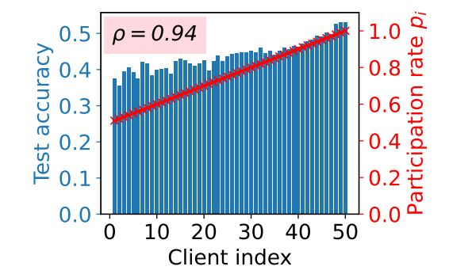

This paper proposes federated data measurements to enhance decentralized data markets by helping buyers identify sellers with relevant and diverse datasets. These measurements enable direct comparisons between sellers, eliminating the need for intermediaries and task-specific models. Our approach aims to improve the efficiency and fairness of data acquisition for machine learning.
C. Lu, M. Mohammadi Amiri
This paper presents a method for task-agnostic data valuation, where a data buyer seeks additional samples from a seller without relying on specific utility metrics. We estimate the value of the seller’s data by measuring statistical differences in diversity and relevance compared to the buyer's existing data. Our approach uses queries designed to maintain seller data privacy and prevent manipulation. Experiments show that this method effectively captures the data's relevance and diversity.
M. Mohammadi Amiri, F. Berdoz, R. Raskar

This paper proposes an incentive-aware algorithm for federated learning that offers differentiated, training-time model rewards to address the challenges of traditional post-training monetary incentives. It theoretically ensures global client incentivization and mitigates error propagation using a stochastic reference-model recovery strategy, guaranteeing optimal outcomes for all clients. Extensive experiments demonstrate that this method significantly outperforms existing incentive mechanisms.
Z. Wu, M. Mohammadi Amiri, R. Raskar, B. K. H. Low
This paper introduces G-FKM, a federated K-means clustering algorithm where initialization is improved by starting at the client level. Instead of initializing centroids at the server, clients first cluster their local data and share the cluster information with the server. The server then uses this data to determine global initial centroids through a greedy algorithm. G-FKM shows accelerated convergence, reduced within-cluster sum of squares, and higher adjusted Rand Index compared to existing federated K-means methods, with minimal additional client-to-server communication. It also outperforms centralized algorithms when client data distributions are skewed.
K. Yang, M. Mohammadi Amiri, S. Kulkarni